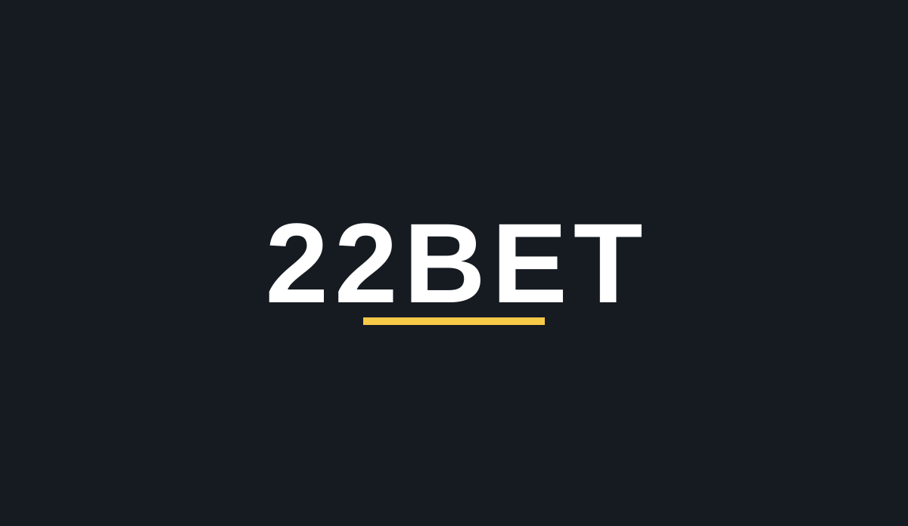

22Bet Review 2026
Affiliate link: we may earn a commission if you sign up through it, at no extra cost to you. This does not influence our rating.
- Where to play: Casino + sportsbook in one wallet from TechSolutions Group (the team behind Planbet and 20Bet), Curaçao-licensed.
- Bonus: Up to €1,500 + 150 free spins across the first four deposits (100% up to €300 + 30 free spins on the first). 35x wagering. Crypto deposits are excluded from bonuses.
- Min deposit: Not published on this page - check the cashier on the official site.
- Withdrawals: Identity verification required before withdrawals; check current limits and timing in the cashier on the official site.
Bonuses and limits change - always confirm the current terms on the operator's site. 18+ T&C apply.
22Bet accepts crypto for play, but per the casino's own terms, deposits made with cryptocurrency are excluded from the welcome package and all other bonuses. If you deposit in BTC, ETH or any other coin, you will not get the €1,500 package. To claim the bonus, deposit with a card, e-wallet or bank transfer. This is confirmed across multiple independent review sources - do not deposit crypto expecting a bonus.
First deposit: 100% up to €300 + 30 free spins. The full package is spread across four deposits, with 35x wagering - clear the wagering in time or the bonus is gone. Always confirm the current offer on the operator's site before claiming.
Claim Bonus
18+ T&C apply
Key terms: 18+. First deposit 100% up to €300 + 30 FS. Wagering 35x. Crypto deposits excluded from all bonuses - deposit with a card, e-wallet or bank transfer to claim. T&C apply.
How to Claim the Bonus
- Sign up through our link - one wallet covers casino and sportsbook.
- Make your first deposit with a card, e-wallet or bank transfer - crypto deposits do NOT qualify for the bonus.
- Bonus credited - 100% up to €300 + 30 free spins on the first deposit, full package up to €1,500 + 150 FS across 4 deposits.
- Clear 35x wagering in time or the bonus expires.
Quick Facts
| Detail | 22Bet |
|---|---|
| Official site | 22bet.com |
| Operator | TechSolutions Group N.V. (also behind Planbet and 20Bet) |
| Licence | Curaçao |
| Casino bonus | Up to €1,500 + 150 free spins across the first four deposits; 100% up to €300 + 30 free spins on the first deposit; 35x wagering |
| Crypto note | Crypto accepted for play but EXCLUDED from all bonuses |
| KYC | Identity verification required before withdrawals - standard practice |
| Payment methods | Cards, e-wallets, bank transfer and crypto - confirm availability for your country in the cashier |
| Games | Large slot library and live-dealer section |
| Sportsbook | Deep sportsbook included in the same wallet - this is 22Bet's home turf |
Licensing & Safety
22Bet is operated by TechSolutions Group N.V., the same group behind Planbet and 20Bet, under a Curaçao gambling licence. It is the group's flagship brand with the longest track record. The licence itself is lighter than the MGA or UKGC, which is the honest ceiling on any Curaçao review. SSL encryption protects transactions, and identity verification (KYC) is required before withdrawals, which is standard practice.
Bonuses & Promotions
The welcome package goes up to €1,500 + 150 free spins, spread across the first four deposits: the first deposit is matched 100% up to €300 with 30 free spins on top. Wagering is 35x - fair for this bonus size, but do read the time limit on the operator's terms page and clear it in time. The single most important rule at 22Bet: crypto deposits are excluded from all bonuses. If you want the package, deposit with a card, e-wallet or bank transfer.
Payment Methods
The cashier covers cards, e-wallets, bank transfers and cryptocurrencies, though availability varies by country - check your own cashier. Crypto deposits are fast, but remember the rule above: they do not trigger any bonus. If the bonus matters to you, fund the qualifying deposits with fiat. Identity verification is required before your first withdrawal.
Games & Sportsbook
22Bet started as a sportsbook, and that is still its strongest side: deep markets, live betting and competitive odds, all sharing one wallet with the casino. The casino side has a large slot library plus live-dealer tables. If you bet on sports as well as slots, the single-wallet setup is the real selling point here.
Pros & Cons
| Pros | Cons |
|---|---|
| Sportsbook + casino in one wallet | Crypto deposits excluded from all bonuses |
| Welcome package up to €1,500 + 150 free spins | 35x wagering must be cleared in time |
| Fair 35x wagering for the bonus size | Curaçao licence only, no MGA/UKGC |
| Flagship brand of the TechSolutions group | KYC verification can slow down during peaks |
FAQ
Is 22Bet legit?
22Bet is operated by TechSolutions Group N.V. - the same group behind Planbet and 20Bet - under a Curaçao gambling licence, with SSL encryption and standard KYC before withdrawals.
What is the 22Bet welcome bonus?
Up to €1,500 + 150 free spins across the first four deposits. The first deposit is matched 100% up to €300 plus 30 free spins, with 35x wagering. Always confirm the current offer on the operator's site.
Do crypto deposits qualify for the 22Bet bonus?
No. Per the casino's terms, cryptocurrency deposits are excluded from all bonuses. Deposit with a card, e-wallet or bank transfer if you want the welcome package.
Who operates 22Bet?
TechSolutions Group N.V., the same operator group behind Planbet and 20Bet.
Does 22Bet have a sportsbook?
Yes - 22Bet started as a sportsbook. Casino and sportsbook share one wallet, so one balance covers both.